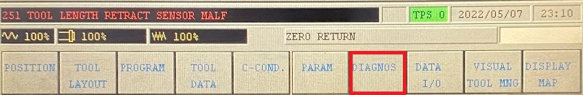
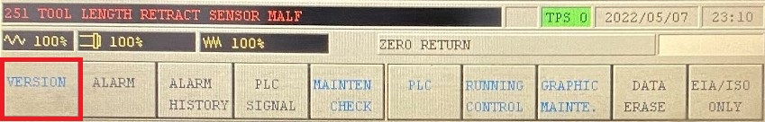
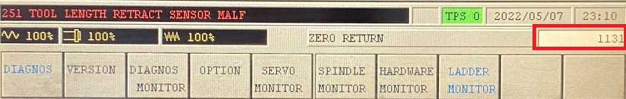
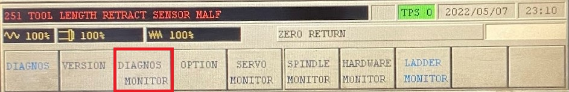
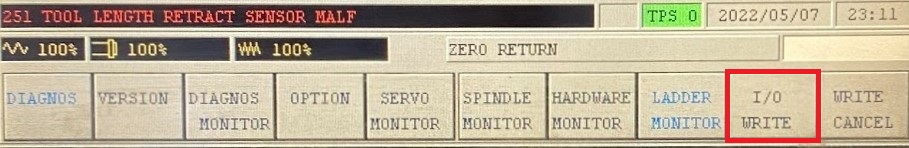
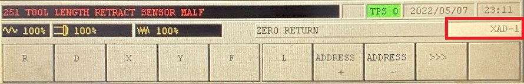
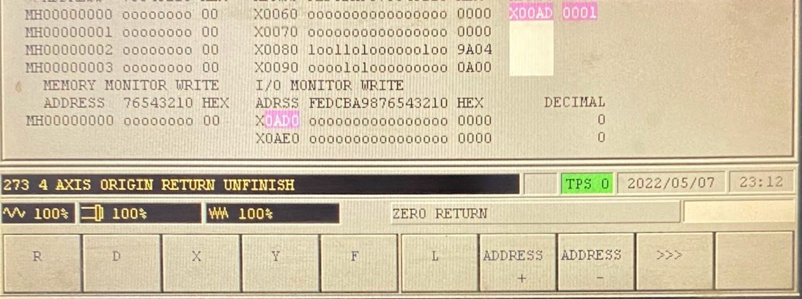

This needs to be done after powering up
Select Diagnose
Select Version
Press Far Right Button
Enter 1131 and hit Input
Select Diagnosis Monitor
Select I/O Write
Enter XAD-1 and press Input
Press the Reset button. The alarm should go away.
